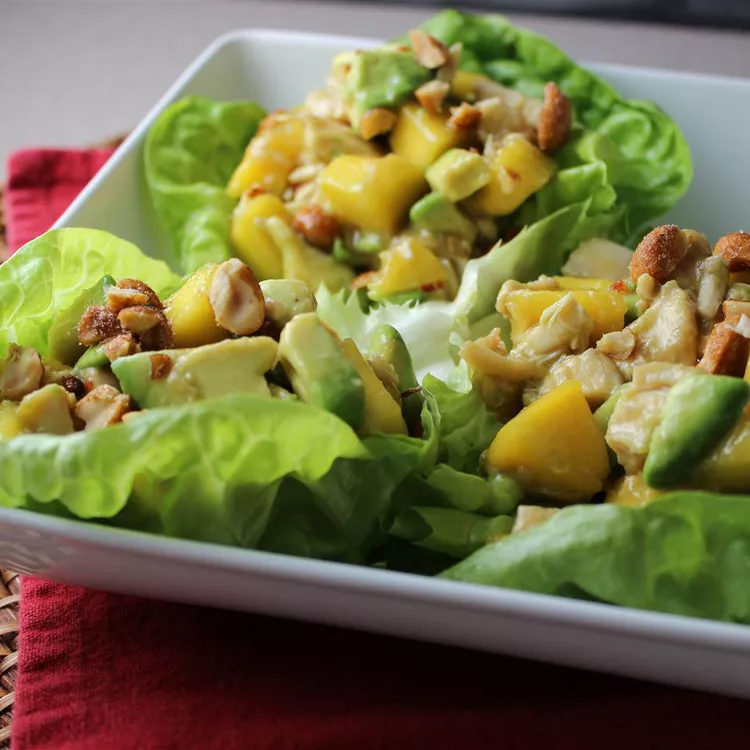

Chicken Salad Recipe

Description
This Chicken Mango Avocado Salad is loaded with juicy chicken, creamy
avocado and that sweet pop of mango flavor take this mango salad over the
top.
Ingredients
- 2 tablespoons brown sugar
- ¼ cup water
- ⅓ cup lime juice
- ½ cup chili garlic sauce
- 4 cups shredded, cooked chicken
- 2 medium mangos - peeled, seeded and diced
- 2 avocados - peeled, pitted and diced
- 1 (10 ounce) package spring lettuce mix
Directions
-
In a saucepan over medium-high heat, stir together the brown sugar and
water.
- Bring to a boil, then pour into a medium bowl.
-
Stir in the garlic chili sauce and lime juice. Set the dressing aside.
- In a large bowl, toss together the chicken, mangos and avocados.
-
Arrange the spring salad mix on serving plates, then top with a few
spoonfuls of the chicken mixture.
- Pour dressing over the top.